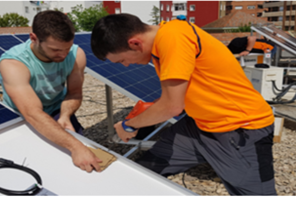
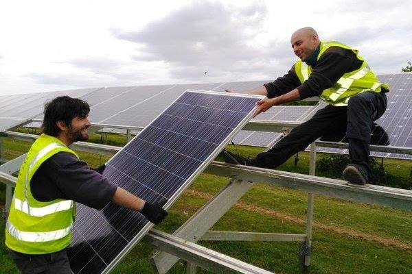

CPIFP Pirámide
Noticias
Oferta formativa
Eficiencia energética y energía solar térmica
¿Qué es?
En el sector energético, en instituciones competentes en auditorías, inspecciones y certificaciones energéticas, así como en empresas dedicadas a realizar estudios de viabilidad, promoción, implantación y mantenimiento de instalaciones de energía solar en edificios.
Este profesional será capaz de:
- Configurar instalaciones solares térmicas y gestionar su montaje y mantenimiento.
- Determinar el rendimiento energético de las instalaciones térmicas y de iluminación en edificios.
- Elaborar propuestas de mejora de la eficiencia de instalaciones térmicas y de iluminación incorporando sistemas de ahorro energético.
- Aplicar procedimientos y programas para realizar la calificación y certificación energética de edificios
- Elaborar informes sobre el comportamiento térmico de edificios.
- Evaluar el consumo del agua en los edificios y proponer alternativas de ahorro y de uso eficiente.
- Formalizar propuestas de instalaciones solares respondiendo a las necesidades energéticas de los clientes.
- Elaborar informes, memorias técnicas, planos y presupuestos de proyectos de instalaciones solares térmicas.

